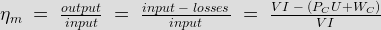
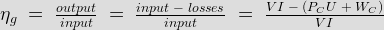

Calculation of Efficiency When the Machine is Motoring on Load
Calculation of Efficiency When the Machine is Generating on Load
Advantages of Swinburne's Test
• Disadvantages
This method is an indirect method of testing a dc machine. It is named after Sir James Swinburne. Swinburne's test is the most commonly used and simplest method of testing of shunt and compound wound dc machines which have constant flux. In this test the efficiency of the machine at any load is pre-determined. We can run the machine as a motor or as a generator. In this method of testing no load losses are measured separately and eventually we can determine the efficiency.
The circuit connection for Swinburne's test is shown in figure below. The speed of the machine is adjusted to the rated speed with the help of the shunt regulator R as shown in figure.
Connection Diagram of Swinburne's Test
Calculation of Efficiency
Let, I0 is the no load current ( it can be measured by ammeter A1 )
Ish is the shunt field electric current ( it can be measured by ammeter A2 )
Then, no load armature electric current = (I0 - Ish)
Also let, V is the supply voltage. Therefore, No load power input = VI0 watts.
In Swinburne's test no load power input is only required to supply the losses. The losses occur in the machine mainly are:
Iron losses in the core
Friction and windings losses
Armature copper loss.
Since the no load mechanical output of the machine is zero in Swinburne's test, the no load input power is only used to supply the losses.
The value of armature copper loss = (I0 - Ish)2 Ra
Here, Ra is the armature resistance.
Now, no to get the constant losses we have to subtract the armature copper loss from the no load power input.
Then, Constant losses WC = VI0 -(I0 - Ish)2 Ra
After calculating the no load constant losses now we can determine the efficiency at any load.
Let, I is the load current at which we have to calculate the efficiency of the machine.
Then, armature electric current (Ia) will be (I - Ish), when the machine is motoring.
And Ia = (I + Ish), when the machine is generating.
Calculation of Efficiency When the Machine is Motoring on Load
Power input = VI
Armature copper loss, PCU = I2 Ra = (I - Ish)2Ra
Constant losses, WC = VI0 -(I0 - Ish)2 Ra
Total losses = PCU + WC
∴ Efficiency of the motor:

Calculation of Efficiency When the Machine is Generating on Load
Power input = VI
Armature copper loss, PCU = I2 Ra = (I + Ish)2 Ra
Constant losses, WC = VI0 - (I0 - Ish)2 Ra
Total losses = PCU + WC
∴ Efficiency of the generator:

Advantages of Swinburne's Test
The main advantages of this test are :
- This test is very convenient and economical as it is required very less power from supply to perform the test.
- Since constant losses are known, efficiency of Swinburne's test can be pre-determined at any load.
Disadvantages of Swinburne's Test
The main disadvantages of this test are :
1. Iron loss is neglected though there is change in iron loss from no load to full load due to armature reaction.
2. We cannot be sure about the satisfactory commutation on loaded condition because the test is done on no-load.
3. We can’t measure the temperature rise when the machine is loaded. Power losses can vary with the temperature.
4. In dc series motors, the Swinburne’s test cannot be done to find its efficiency as it is a no load test.
 by
by